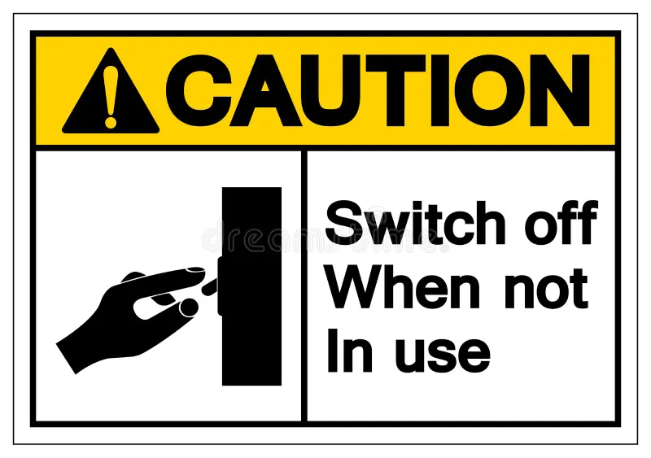
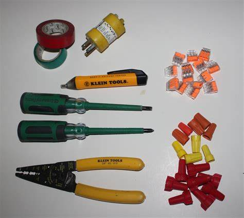
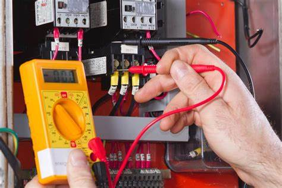

Introduction
Proper house wiring is essential for safety and efficiency. This guide provides important precautions to consider when dealing with electrical wiring in your home.
Precautions

Turn Off Power
Always turn off the power at the main circuit breaker before starting any electrical work. This ensures that there is no live current flowing through the wires you will be handling.

Use Correct Tools
Use the appropriate tools and equipment for electrical work. Insulated tools can protect you from electric shock.

Check Wiring
Regularly check your wiring for signs of wear or damage. Faulty wiring can lead to electrical fires or other hazards.